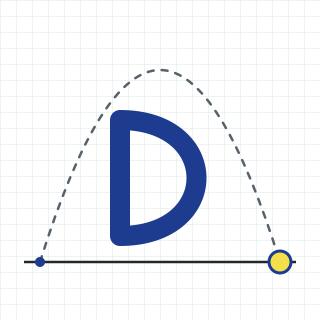
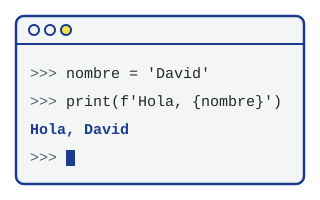
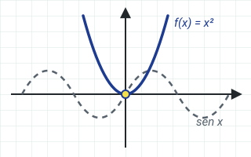
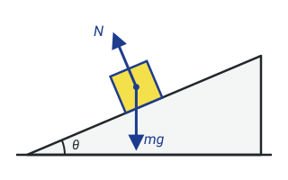
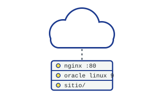
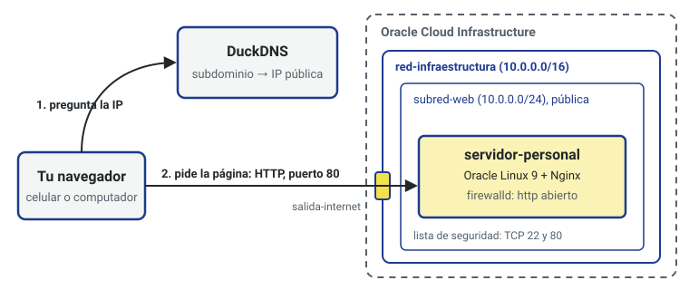

David Correa
Estudio ingeniería y voy en primer semestre. Esta es mi página personal: la escribí en HTML, CSS y JavaScript, y la publiqué en una máquina virtual que configuré en Oracle Cloud.
Estás viendo esta página en este servidor

Lo que estoy aprendiendo
Cuatro materias de mi primer semestre. Cada una terminó metida de alguna forma en esta página.
-

Programación en Python
Variables, condicionales, ciclos y funciones. Es el lenguaje con el que estoy aprendiendo a pensar un problema paso a paso.
-

Precálculo
Funciones, gráficas y trigonometría. El seno y el coseno que usa el laboratorio de abajo vienen de aquí.
-

Física
Movimiento, vectores y fuerzas. El tiro parabólico del laboratorio es un ejercicio de clase convertido en programa.
-

Infraestructura TI y Cloud Computing
Redes virtuales, máquinas en la nube y servidores web. Esta página corre sobre lo que construí en esa materia.
Mis talleres en la nube
Tres talleres en Oracle Cloud Infrastructure, cada uno construido sobre el anterior.
-
Cuenta y red
Organicé la cuenta con un compartimento, un usuario con permisos limitados y una red virtual con una subred pública y reglas para los puertos 22 y 80.
-
Primera publicación
Creé una máquina con Oracle Linux 9, instalé Nginx y publiqué una página de ejemplo descargada desde un repositorio Git.
-
Mi propia página
Una máquina nueva, esta página y un subdominio de DuckDNS para abrirla sin tener que recordar la dirección IP.

Laboratorio de tiro parabólico
Elige la velocidad inicial, el ángulo y dónde lanzas. La página calcula el tiempo de vuelo, la altura máxima y el alcance, y dibuja la trayectoria.